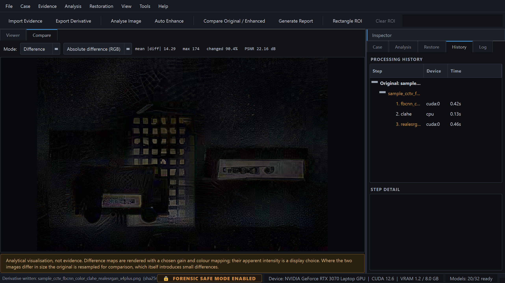
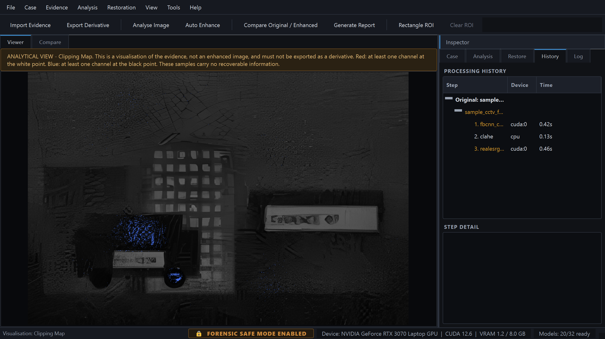
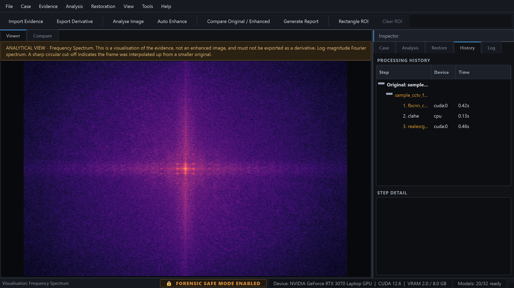
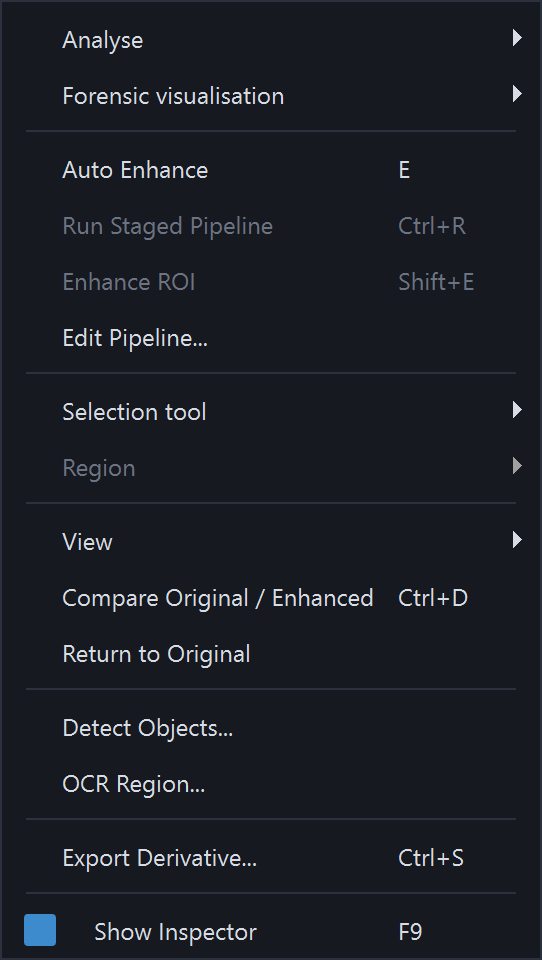
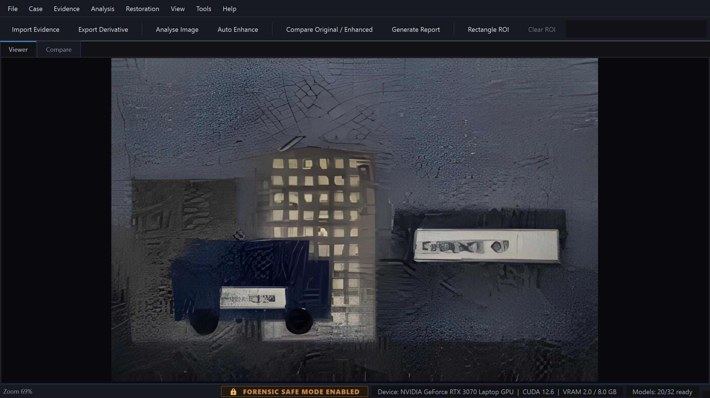
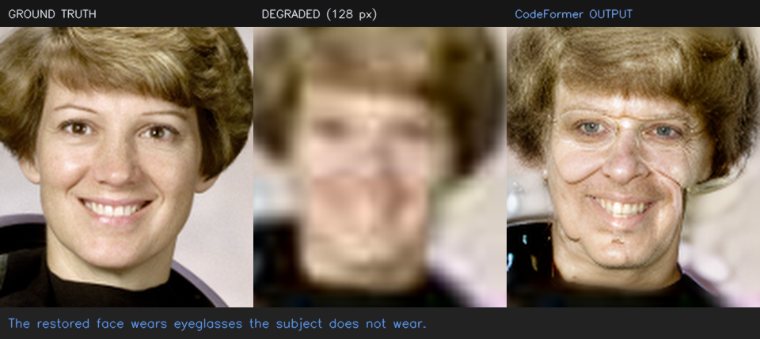

Chain of custody
Evidence is copied into the case, hashed with SHA-256, SHA-512 and MD5, and set read-only. Every state change writes an append-only audit entry.
ForensicVision is a native desktop workstation for forensic image analysis and enhancement. It imports evidence under a documented chain of custody, measures what is wrong with an image, proposes a restoration pipeline for you to review, and produces a report that states exactly what was done — and what it does not prove.

Crisp, confident, and possibly not the one that was there. Image enhancement in a forensic context is dangerous in one specific way: a learned model can produce a result that looks like recovered detail but is actually invented. Every part of ForensicVision is built around keeping that distinction visible.
pip install.may synthesise in the database, the sidecar and the report.
A single may_synthesise flag on each model drives the restoration
panel, the pipeline review dialog, the confirmation prompt, the case-tree
colouring, the provenance sidecar, the database row and the PDF report. There
is no second place where it could be forgotten.
Four of the twenty-two neural models are declared incapable of synthesising, and the reason is structural rather than a judgement call. Zero-DCE outputs the coefficients of a tone curve rather than pixels, and that curve is provably monotonic — so each output pixel is a monotone function of that pixel's own input value, and no learned prior can paint an edge, a character or a face into it. DnCNN is discriminative: it predicts and subtracts a noise residual, with no image prior to draw new structure from.
A report can therefore read neural and
may synthesise: no on the same line, and both are true.
Collapsing the axes would make the warning meaningless exactly where it
matters — you could no longer tell CodeFormer, which invents faces, from a
tone curve.
Everything below ships in v1.0.0 and is exercised by the test suite.
Evidence is copied into the case, hashed with SHA-256, SHA-512 and MD5, and set read-only. Every state change writes an append-only audit entry.
Blur, motion blur, noise, JPEG artefacts, low resolution, under- and over-exposure, low contrast and haze — each with a 0–100 severity and the raw measurements behind it.
Auto Enhance proposes a sequence with a rationale for every step, tied to the measurement that triggered it. Nothing runs until you press Run.
Six architectures reimplemented with upstream layer naming, so official .pth files load with zero key mismatches — and with no dependency on the unmaintained basicsr stack.
Side-by-side, split, overlay and five difference modes, locked to the same apparent scale even when the derivative is four times larger, with PSNR and changed-pixel statistics.
Case, evidence, hashes, metadata, analysis, pipeline with rationale, parameters, model provenance, before/after, difference, history, audit trail and limitations.
On by default. Originals are read-only, never a write target; deleting evidence and editing history are refused; turning it off is itself audited.
RGB and luminance histograms, edge map, high pass, noise residual, saturation, exposure and clipping maps, frequency spectrum and error level analysis — overlaid, never baked in.
CUDA with FP16, tiled inference with feathered blending for images larger than VRAM, and automatic tile-size backoff on out-of-memory. CPU works throughout.
A model with no weights shows Weights missing and an Install button. A model that is declared but not integrated says exactly what is missing. Neither ever returns a substitute.
Apply one reviewed pipeline across a folder, or restrict analysis and enhancement to a rectangle, ellipse, polygon or freehand region.
Nothing in the analysis, restoration, forensic, database or report packages imports Qt — so the same engine can back a CLI, a service or a video pipeline.
Click any image to open it full size. The sample throughout is
synthetic evidence generated by scripts/make_sample.py
— a 320×213 frame degraded with blur, sensor noise and quality-28 JPEG
compression. No real case material ships with the project.
Case tree, file metadata and hashes, with integrity verification one click away.

Nine indicators, colour-coded by severity, each carrying the estimator that produced it.

The proposal, its reasoning, and a warning banner naming the generative steps.

Locked to the same apparent scale, with every step, device and duration recorded.

Exactly what changed, and a standing caveat that its apparent intensity is a display choice.

One of eleven forensic visualisations, all non-destructive overlays.

Where prior upscaling and periodic artefacts become visible.

Licence, size, digest and source URL — shown before anything downloads.

Sixteen entries, so the panels can stay closed and the image keeps the room.

82% of the window for the image, one keystroke away.

Ten task groups. Every model states its kind, its method and whether it can invent content.

The disclaimer appears on the title page and in every footer, so a printed extract cannot lose it.

A measured example of synthesis, kept in the documentation on purpose.
CodeFormer is fully integrated — detect with OpenCV YuNet, align to the
canonical FFHQ frame, restore, blend back. Run on the standard
astronaut benchmark degraded to 128 px, it produced a sharp,
confident, entirely plausible face that also altered apparent age, face shape
and hairline. Nothing in the result distinguishes the measured features from
the invented ones.
So it is fenced off: a face-specific confirmation before every run, the
inter-ocular distance of each source face measured and recorded with a
warning below 30 px, the fidelity weight exposed so the range can be swept,
and every derivative marked may synthesise. This example is
kept in LIMITATIONS.md §5
rather than hidden, because it is the clearest demonstration of what the
whole application exists to guard against.
Peak signal-to-noise ratio against ground truth on the bundled synthetic evidence. These numbers are why both operator classes are kept rather than defaulting to whichever is newer.
| Operation | Classical baseline | Neural | Winner |
|---|---|---|---|
| Denoise (σ ≈ 18/255) | Non-local means +9.7 dB | DnCNN blind +14.4 dB | Neural |
| JPEG quality 18 | Deblocking +0.1 dB, −15% blockiness | FBCNN +3.5 dB, −73% | Neural |
| Motion deblur | Wiener +6.6 dB | Restormer +2.5 dB | Classical |
| Defocus deblur | Richardson–Lucy +1.9 dB | Wiener −1.2 dB | Classical |
| Low light (clean) | Gamma 0.35 +10.2 dB | Zero-DCE++ +12.7 dB | Neural |
| Low light (with sensor noise) | Gamma 0.35 +9.5 dB | Zero-DCE++ +9.6 dB | Tied |
Gains are against the untouched degraded frame. Wiener deconvolution scores negative on a pillbox defocus kernel because the transfer function has genuine zeros — documented in the operator's own description rather than hidden. The two low-light rows are the same lesson from the other direction: on a clean dark frame Zero-DCE++ beats the best hand-set gamma curve by 2.4 dB, but add the sensor noise a real low-light frame actually has and the advantage collapses to 0.03 dB, because brightening shadows brightens their noise with them at roughly five times the input sigma.
Every neural architecture is reimplemented with upstream layer naming, so the official weight files load with no key remapping at all.
| Model | Task | State-dict keys | Missing / unexpected | Parameters |
|---|---|---|---|---|
| Real-ESRGAN x4plus | Super-resolution | 702 | 0 / 0 | 16.70 M |
| SwinIR | SR · denoise · JPEG | 550 | 0 / 0 | 11.90 M |
| Restormer | Deblur · denoise | 494 | 0 / 0 | 26.13 M |
| FBCNN | JPEG artefacts | 184 | 0 / 0 | 71.92 M |
| DnCNN | Denoise | 40 | 0 / 0 | 0.67 M |
| CodeFormer | Face restoration | 515 | 0 / 0 | 94.11 M |
| Zero-DCE · Zero-DCE++ | Low-light exposure | 14 · 28 | 0 / 0 | 0.079 M · 0.011 M |
| NAFNet | Deblur · denoise | Implemented; never verified against a published checkpoint — upstream is Google-Drive-only | ||
The last four rows are the ones this project loses, and they are in the table on purpose. A tool arguing for honest labelling that oversold itself would undercut its own position.
| ForensicVision | Amped FIVE | Photoshop | GIMP + G'MIC | chaiNNer · Upscayl | Topaz Photo AI | |
|---|---|---|---|---|---|---|
| Licence | Apache-2.0, open | Commercial | Commercial | GPL, open | GPL/AGPL, open | Commercial |
| Cost | Free | Paid, per seat | Subscription | Free | Free | Paid |
| Purpose-built for forensics | Yes | Yes | No | No | No | No |
| Case and evidence management | Yes | Yes | No | No | No | No |
| Cryptographic evidence hashing | Yes | Yes | No | No | No | No |
| Per-derivative provenance record | Yes | Yes | XMP history | No | No | No |
| Append-only audit trail | Yes | Yes | No | No | No | No |
| Automated forensic PDF report | Yes | Yes | No | No | No | No |
| Classical / deterministic operators | 10 | Extensive | Yes | Extensive | No | No |
| Deep-learning restoration | 22 adapters | — | Some | Plug-ins | Yes | Yes |
| Per-step “may synthesise” labelling | Yes | — | No | No | No | No |
| Explains why each step is proposed | Yes | — | No | No | No | No |
| Review-before-run pipeline gate | Yes | — | No | No | Partial | No |
| Runs fully offline, no account | Yes | Yes | No | Yes | Yes | Activation |
| Never auto-downloads weights | Yes | n/a | n/a | n/a | No | n/a |
| Reusable headless engine | Yes | No | No | Script-Fu | Yes | No |
| Video / DVR support | No | Yes | No | No | No | No |
| Established in court | None | Extensive | n/a | n/a | n/a | n/a |
| Vendor support and training | None | Yes | Yes | Community | Community | Yes |
| Platforms | Win · Linux | Windows | Win · macOS | Win · macOS · Linux | Win · macOS · Linux | Win · macOS |
“—” marks a capability we were not able to confirm from public documentation, not an assertion that it is absent. Commercial feature sets change; verify current capabilities with the vendor.
Real-ESRGAN, CodeFormer and SwinIR CLIs, chaiNNer, Upscayl give you the model, not the workflow — no case, no hash, no record of what ran with which parameters, no report. And they present neural output as “the enhanced image,” full stop.
Photoshop and GIMP are vastly more capable as editors and completely unsuited to evidence: destructive by default, no chain of custody, and nothing in the saved result separating a deterministic filter from a generative fill.
Amped FIVE is the professional standard, with a substantial court record, video support and vendor validation. ForensicVision does not replace it and claims no court acceptance whatsoever. What it offers is open source, modern models, and explicit synthesis labelling.
Python 3.11 or newer. Everything except the neural models works out of the box — PyTorch is optional and imported lazily, so the application starts with no ML stack installed at all.
# 1. Clone and enter the project git clone https://github.com/sihabsahariar/ForensicVision.git cd ForensicVision # 2. Create an isolated environment py -3.11 -m venv .venv .venv\Scripts\Activate.ps1 # 3. Install dependencies python -m pip install --upgrade pip python -m pip install -r requirements.txt # 4. Check the environment, then launch python main.py --check python main.py
# 1. Qt runtime libraries (Debian / Ubuntu) sudo apt install python3.11 python3.11-venv libgl1 libxkbcommon-x11-0 \ libxcb-cursor0 libxcb-xinerama0 # 2. Clone and set up git clone https://github.com/sihabsahariar/ForensicVision.git cd ForensicVision python3.11 -m venv .venv source .venv/bin/activate pip install -r requirements.txt # 3. Check the environment, then launch python main.py --check python main.py
python scripts/make_sample.py # synthetic test evidence python main.py --image samples/sample_cctv.jpg --no-case # inspect, no case python main.py --self-test # functional end-to-end check
Install a CUDA build of PyTorch to use the neural models on an NVIDIA card; without one they run on CPU, more slowly. Model weights are never downloaded automatically — open Tools → Model Manager (Ctrl+M) and install what you need. Full instructions are in the documentation.
Ctrl+N — a self-contained directory with its own SQLite database, so a case folder can be archived or handed over as a unit.
Ctrl+O — copies the file, computes three digests, extracts EXIF and JPEG quantisation tables, and sets the stored original read-only.
A — nine degradation indicators, each with its severity, its raw measurements and the name of the estimator that produced it.
E — Auto Enhance builds a recommendation from the measurements and shows it. Reorder, disable, re-parameterise or reject any step. Nothing has run yet.
Ctrl+D — side-by-side, split, overlay or difference, locked to the same apparent scale, with PSNR and changed-pixel statistics.
Ctrl+P — fourteen sections including the full hash chain, the rationale for every step, and the model provenance behind each one.
Contributions towards any of these are very welcome — see the contribution conventions.
This project implements architectures published by others and loads their official checkpoints. Credit belongs to the original authors: Real-ESRGAN · SwinIR · Restormer · FBCNN · DnCNN · NAFNet · CodeFormer · YuNet, and the OpenCV, PyTorch, NumPy, ReportLab, SQLAlchemy and Qt projects.